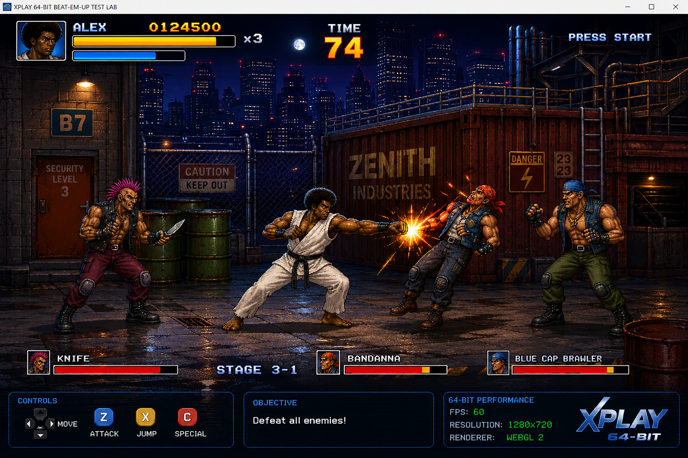

1. Lock OpenAI Vision Truth

{}2. Interpreter Beast
{}3. 64-bit Visual Target

Target only. The runtime below should use generated assets, not this flattened screenshot.
4. OpenAI Asset Forge
Each button is one image-generation call. Generate only what you need.
Alex Sprite Sheet
Enemy Sprite Atlas
5. Playable 64-bit Runtime
A/D or ←/→ move · W/S depth · Space attack · R reset. Runtime crops the generated sheets into animation cells.